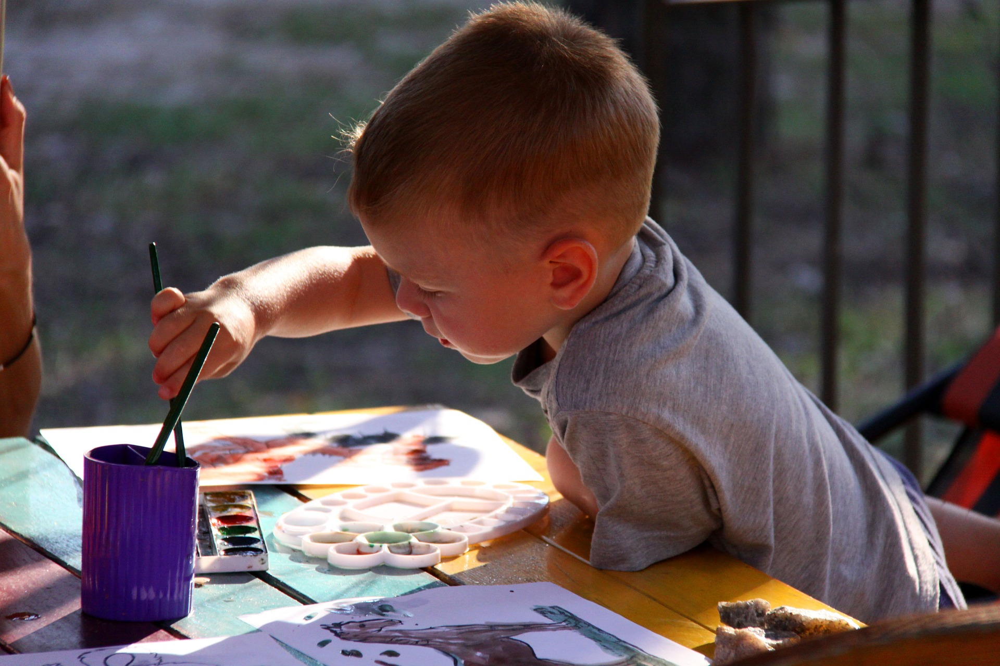
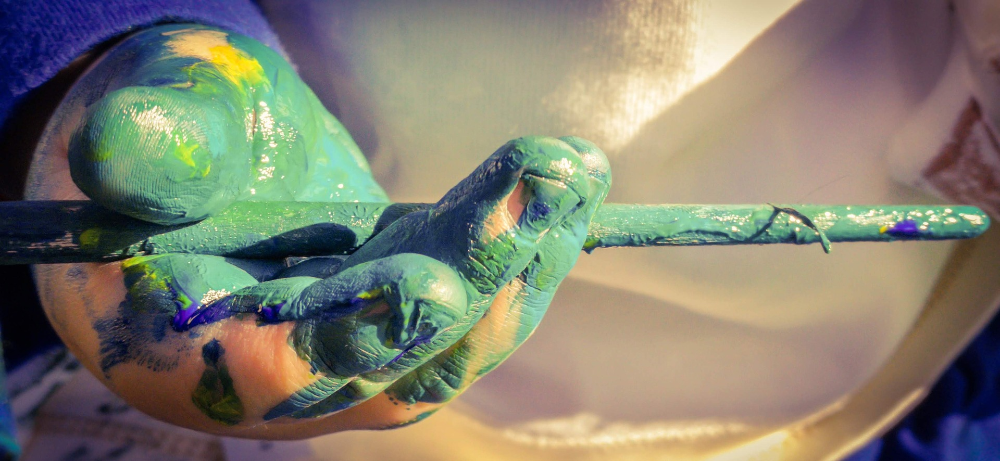
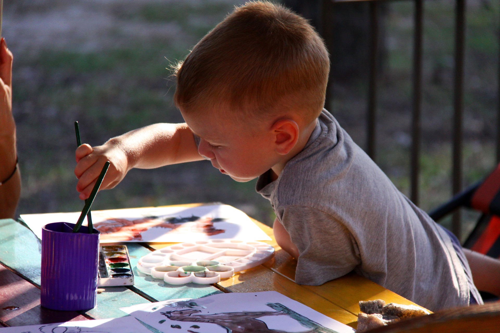
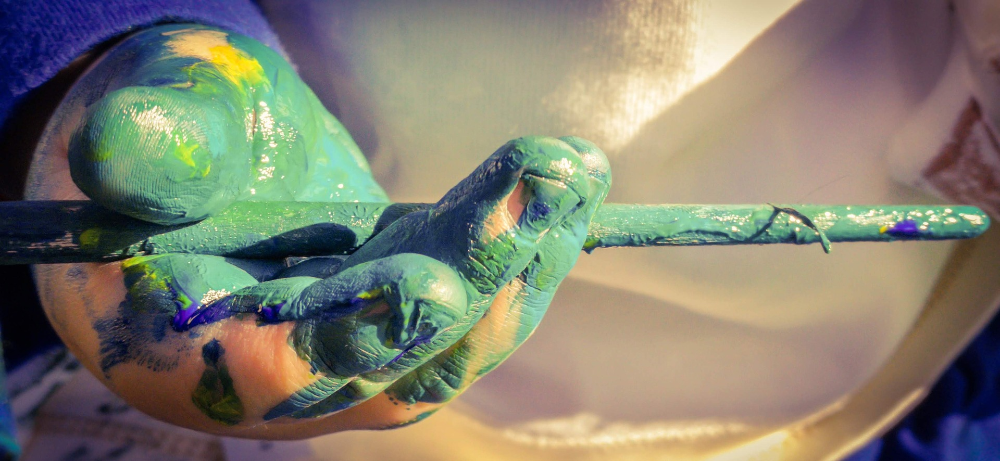

Kids' Shapes and Scribbles
ISABEL FATTAL OCTOBER 25, 2017
Your child’s quirky art isn’t just cute, even the most
bizarre depictions can have deep creative intention.
Your child’s quirky art isn’t just cute, even the most
bizarre depictions can have deep creative intention.
High on the list of awkward social interactions is the moment when a dentist or a coworker shows off her young child’s
nonsensical art. A bystander might think the art—or at least the fact of its existence—is cute. Or she might think it’s
ridiculous or downright terrifying. In either case, a common reaction is to smile and ask, “What’s it supposed to be?”
After all, these creations rarely look like anything fully recognizable or “real.” I uncovered a host of idiosyncrasies
after asking parents about their kids’ art. There was a sideways house (or was it a knife?); a giant tooth resembling candy
corn; a supposed self-portrait consisting of an oval with some jagged lines in the middle. Observers tend to laugh these
sorts of things off as a kid’s erratic artistic process. If the drawing seems angry or dark, they might worry about what
it means.
But experts say these responses rely on an outdated understanding of children’s drawing. Starting in the 20th
century, psychologists tended to assume that a kid had reached a high level of drawing development if she could depict
something realistically. They argued that when a child drew something simple, like a human figure in the “tadpole”
style-a sort of circular head with arms and legs jutting out of it that’s common in kids’ drawing-it was because of the
child’s misconception of the human body.
.jpg)
.jpg) 



Theo, age 5
George, age 5, Maria, age 3
Lily, age 3
A page out of a drawing "book" by a 3-year-old student
Roger, age 4
Giving the kids the chance to draw anything that comes to their minds.
Experiencing with nature to discover new ways of creativity.
Art, is the best way to stimulate creativy
Frank , age 4
Tyler, age 6
The way they see the world though art
Jessica , age 5
Every kid express different things with colors and shapes
Steffany , age 4
Trevor , age 2
A drawing with abstractions or quirks? That meant a child didn’t quite understand the object she was trying to depict.
Or, according to later theories, it simply meant she didn’t know how to represent things realistically (even if she
did understand how the thing looked in the real world). But today, a growing number of psychologists suggest that it’s
a mistake to see any drawing that doesn’t look “real” as inferior or wrong.
While observers tend to agree that there’s a stage at which most children strive for realistic depiction in their drawing,
many psychologists argue that at their earlier stages of drawing, children aren’t thinking about realism. Take, for
example, the way kids tend to scatter objects in awkward places in their drawings; they might draw a house on the left
corner of the page and then a road that somehow stands above it. But that doesn’t mean they don’t understand how these
scenes look in the real world, some experts say; instead, the child is more concerned about achieving a kind of visual
balance between the objects. Their goal, ultimately, is to create something that’ll make sense to the person they show
it to.
“They are trying to draw a visual equivalent, something that is readable, something that somebody else will understand,”
said Ellen Winner, a psychology professor at Boston College who also works with Harvard Graduate School of Education’s
Project Zero, a group that focuses on arts education.
In fact, sometimes children prefer to draw something a certain way even when they know it “should” look different, or even
when they’re well able to draw the object more realistically. Winner once heard about a preschool-aged girl who was
drawing a “tadpole” human figure; when her father asked her about it, she said something along the lines of “I know they
don’t look like this, but this is the way I like to draw them.” David Pariser, a professor of art education at Concordia
University in Montreal, added that sometimes children may draw tadpoles simply “because they’re in a hurry and want
to do a bunch of them.”
In recent decades, scholars have found that children’s drawing development can lead toward myriad destinations—including
forms of “non-realistic” depiction like maps, charts, and symbols. And these destinations can vary across cultures.
Pariser points to a 1930s account by the Australian anthropologist Charles P. Mountford of an Australian Aboriginal child
who was raised by European settlers and grew up drawing culturally familiar objects like houses and trains; once he
reunited with his Aboriginal community, though, he began drawing using symbols such as circles and squares, which were
common cultural forms of expression in his community. If Mountford’s account is accurate, Pariser argues, then what
might look to an observer like a move from more-sophisticated to less-sophisticated drawing is actually just a case of
the child taking inspiration from a different set of cultural symbols, and perhaps also a different set of expectations
from the adults in his life on what counted as good art.
“There is nothing inevitable about either style as an endpoint to drawing development,” Pariser told me. In one culture,
realistic depiction is the goal; in the other, it’s abstraction. Theories as to just how culturally constructed kids’
drawing habits really are vary extensively, but experts agree that subtle cultural differences have been found in kids’
art across the world. Japanese children, for example, have been found faces and big eyes in recent years, which some say
is thanks to the influence of manga comics to draw human figures with heart-shaped.
In fact, adult abstract artists such as Robert Motherwell and Paul Klee were inspired by children’s drawing.
Observers have found similar patterns in modern abstract art and kids’ drawing; one example is the “X-ray” drawing,
or a drawing in which the “inside” of a person is made visible (like a baby shown inside a woman’s stomach). For the
museum-goers out there who tend to point to a piece of modern art and say, “My kid could have made that!” it’s worth
remembering that often, that’s actually just what the artist had in mind.
All this suggests that kids’ shapes and figures aren’t all that simplistic after all—what’s dismissed as simplicity may
be a degree of mental freedom that many abstract artists long to recreate. Children might be more open to playing
with representation of invisible things like sound and emotion, Concordia’s Pariser has argued, because they aren’t
yet limited by the constraint of depicting only visible subjects that’s characteristic of traditional Western art.
Of course, young children’s artistic absurdities often come down to the fact that they are kids, that their technical
abilities aren’t well-advanced. Many scholars warn against overestimating kids’ artistic sophistication; any similarities
to the work of brilliant abstract artists are just lucky accidents, they say. Lucky accident or artistic prodigy,
acknowledging that young kids aren’t as intent on producing a realistic rendering helps demonstrate what the drawing
experience means to them. For many kids, drawing is exhilarating not because of the final product it leads to, but
because they can live completely in the world of their drawing for a few minutes (and then promptly forget about it a
few minutes later). Adults may find it hard to relate to this sort of full-body, fleeting experience. But the opportunities for
self-expression that drawing provide have important, even therapeutic, value for kids.
Even simple scribbles are meaningful. While it was once thought that kids only scribbled to experience the physical
sensation of moving their arm along the page, “now it’s been shown that when children are scribbling … they’re representing
through action, not through pictures,” said Boston College’s Winner. “For example, a child might draw a truck by making a
line fast across the page and going ‘zoom, zoom,’ and so it doesn’t look like a truck when the child is done, but if you
watch the process, what the child says and the noises and motion he makes when he’s drawing, you can see that he is
trying to represent a truck through action,” she said. “And in a way you have drawing fused with symbolic play.”
Liane Alves, a prekindergarten teacher at Inspired Teaching Demonstration Public Charter School in D.C., told me about
a student who presented her with a drawing featuring a single straight line across the page. Alves assumed the child
hadn’t given too much thought to te drawing until he proceeded to explain that the line was one of the mattresses from
The Princess and the Pea, one of the fairy tales they read in class. The student, however, may have offered a
different explanation at another point in time. Maureen Ingram, who’s a preschool teacher at the same school, said her
students often tell different stories about a given piece of art depending on the day, perhaps because they weren’t
sure what they intended to draw when they started the picture. “We as adults will often say, ‘I’m going to draw a
horse,’ and we set out ... and get frustrated when we can’t do it,” Ingram said. “They seem to take a much more sane
approach, where they just draw, and then they realize, ‘it is a horse.’”
Ultimately, what may be most revealing about kids’ art isn’t the art itself but what they say during the drawing process.
They’re often telling stories that offer a much clearer window into their world than does the final product. Asking them
what their drawing is “supposed to be” wouldn’t get any answers, either; some have even argued that kids might be
naming their work because they’re used to the ritual of their teachers asking them to describe their drawing and then
writing a short title on the piece of paper. Studies suggest that kids will create an elaborate narrative while drawing,
but when telling adults about their work they’ll simply name the items or characters in the image.
And what about those odd or scary-looking drawings? Does that mean kids are telling themselves stories that are odd or
scary?
It’s rarely a good idea to over-interpret it. Winner pointed to parents who worry when their kid
draws a child the same size as the adults, wondering whether she’s suffering from, say, a feeling of impotence a desire
to feel as powerful as older people. But the likely reason is that the child hasn’t yet learned how to differentiate size
in his or her representation; the easiest solution is to make all the figures the same size.
Other Articles